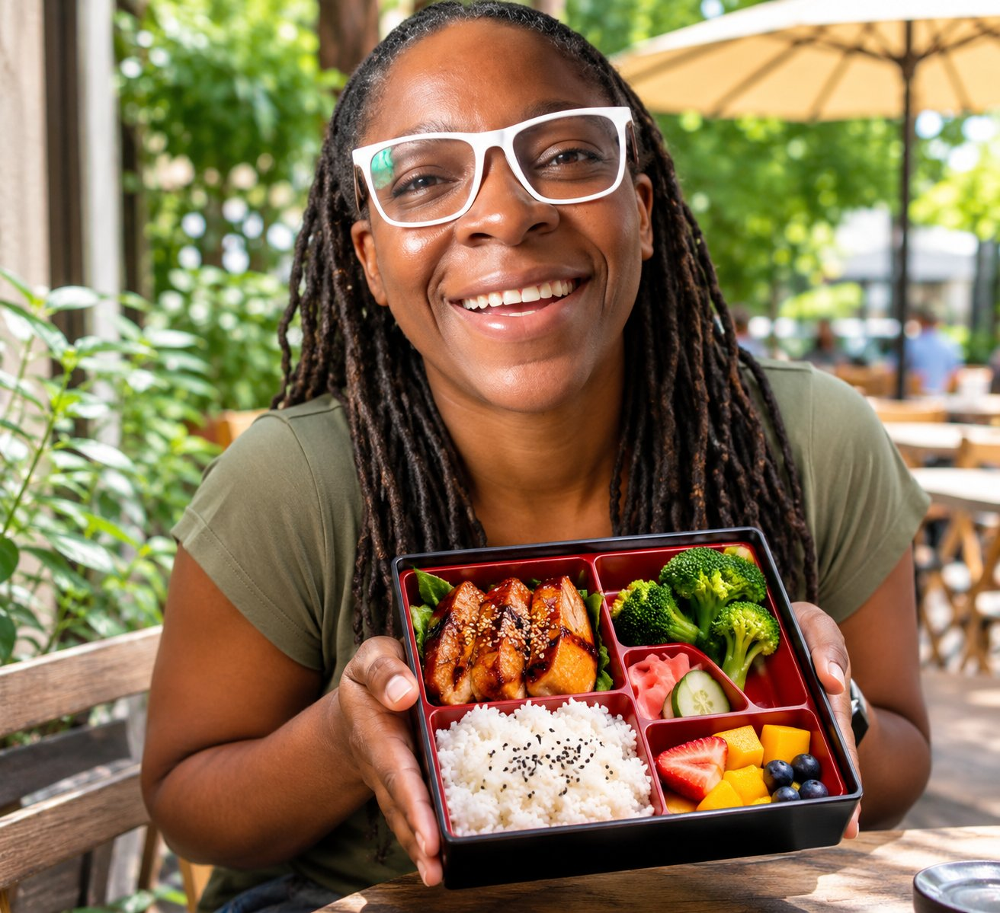
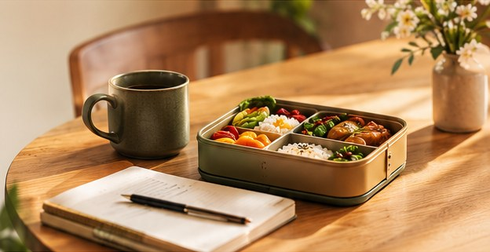

Free, forever
The Free Lunch Club
Every month, a free academic bento: grants, scholarships, exchanges, mentorships and tools, packed into neat compartments, plus this month's bento experience.
Join free →
Why “Free Lunch”?
We are often told there's no such thing as a free lunch. Yet every year, funders, universities and organisations give away “free money” as grants, scholarships, exchanges, internships and mentorships. They cost nothing to apply for. The hard part is finding the right ones in time, and knowing how to stand out.
Why bento?
A bento is a Japanese packed lunch: one box divided into neat compartments, each holding something different. It is one of my favourite things. Each month's opportunities are packed the same way, so you can go straight to the compartment you need.
What's in the box
Five compartments, every month
Every opportunity is free to apply for, and comes with its deadline, who it suits and a tip on how to stand out.
Rice
Scholarships and grants
Funded study, research grants and awards
Protein
Training and exchanges
Internships, exchanges, workshops and summer schools
Vegetables
Mentorships
Mentoring, coaching and fellowship programmes
Pickles
Tools
Free software, templates and resources
Fruit
Freebies
Free courses, events, conference places and giveaways
Feed your body. Feed your career.
This month's bento experience
People in research look after their students, experiments and deadlines, and often forget themselves. So every box also brings a bento experience: a working-lunch recipe with a Zambian twist, a small pause for your wellbeing, and a little joy.
Every month you get two boxes: one feeds you, the other feeds your future.

Want help to grow faster?
When you find an opportunity you want, the Working Lunch and the Private Table help you get your application ready and stand out.